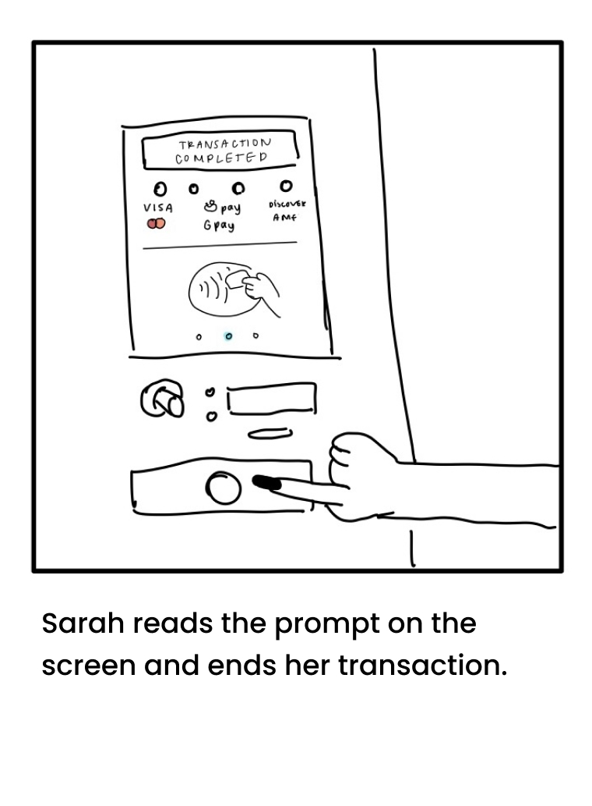
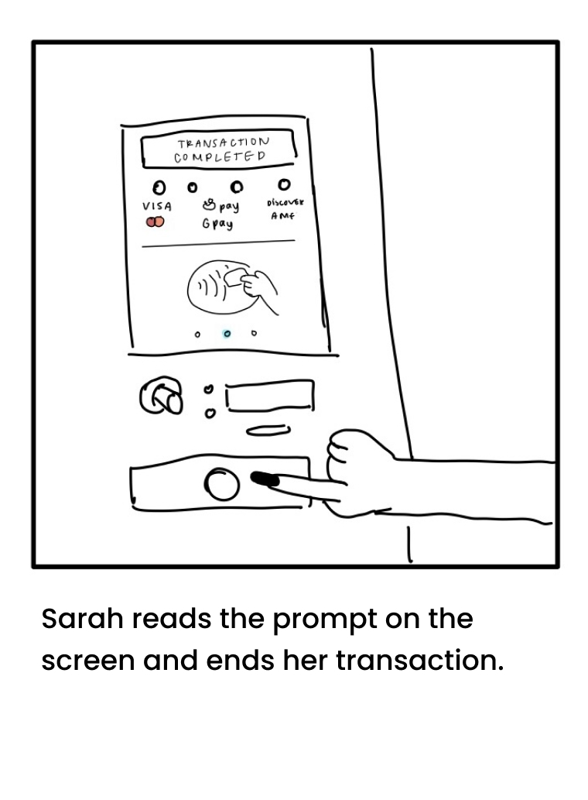

PROJECT
Personas & Storyboarding
A deep dive into the principles of UX through analyzing interactions with a soda vending machine interface.
INTERFACE: SODA VENDING MACHINE
SKETCH
I chose to observe the soda vending machine in the Underground to build user personas and a storyboard.
The purpose of this vending machine is for students to purchase the soda of their choice quickly and with ease. This interface is multifaceted in that it uses buttons to indicate drink choice and a screen for payment operations. The payment screen accepts mobile payments and indicates other acceptable payment types. There are slots for coins and a less obvious button to complete transactions. A more simple component of this interface is the slot where drinks come out. The intended order of operations is for users to first pay, then choose their drink, and then confirm the end of the transaction.
USER INTERVIEWS & OBSERVATIONS üîç
KEY OBSERVATIONS
- Users tend to press the drink button as their first move (3/4 users)
- After they pay, they tap the drink button once then usually tap it again
- Even if the drink button was pressed twice, only one drink was dispensed
- Users had a difficult time confirming that the transaction was over & they got what they paid for
- Lots of frustration when the machine was out of a given drink. No clear indication if they paid or not
- Only one user pressed the button for ending the transaction. The rest walked away
INTERVIEW QUESTIONS
- Have you ever used this type of vending machine before?
- Do you know how much you just paid? How confident are you? If not why
- Did you feel any of the following while using the machine: happy, satisfied, frustrated
- Was it obvious to you what you had to do to get your drink?
- If not, how long did it take you to figure out
- What was the biggest challenge?
INTERVIEW TAKEAWAYS
- Previous experience did provide any extra intuition for users
- Users pressed the drink buttons more than once even if they only wanted one drink.
- Most users were confused about how much they actually paid. Very few were aware of the confirmation message
- The biggest slowdowns were determing how to get started, and waiting for the drink to be dispensed
- All users agreed that they were unsure if they should press the drink button first or pay first
PERSONAS üë™
EMPATHY MAP #1
Spacey Sarah is a happy-go-lucky girl with lots of work she likes to procrastinate. Though she gets easily confused, she is always unbothered and goes with the flow.
EMPATHY MAP #1
Temperamental Tim has a lot on his plate and no time to waste. Wasting time is his pet peeve and he tends to be a hot head. He knows exactly what he wants when he orders, and is all about the grindset.
STORYBOARD üñºÔ∏è
 
